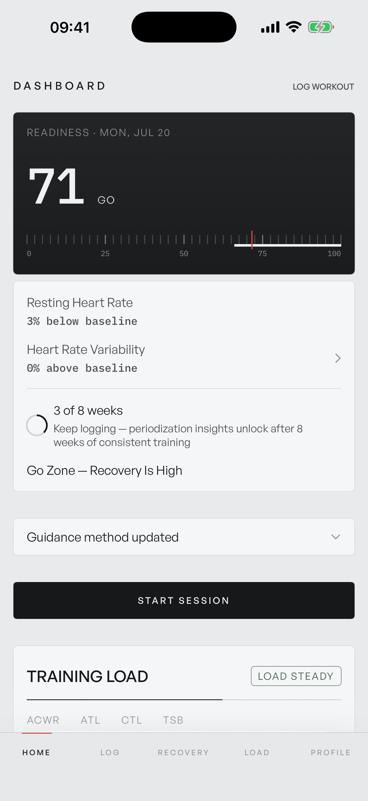
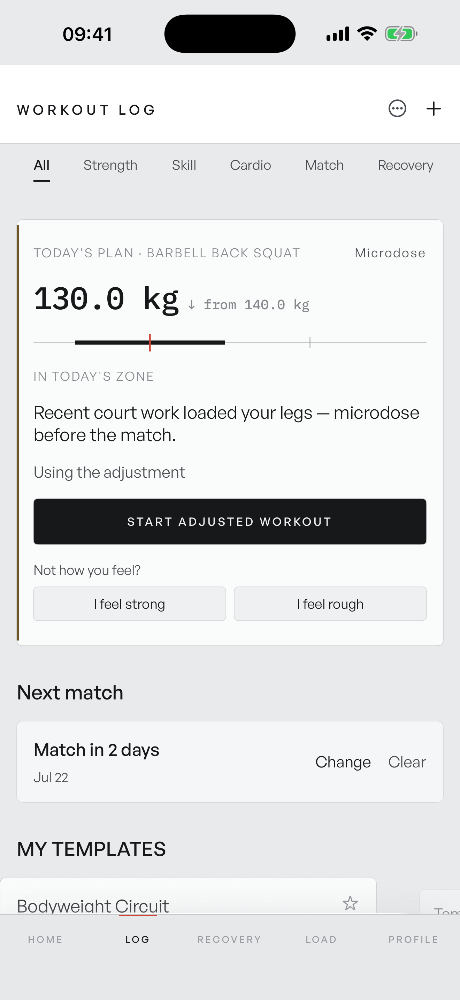
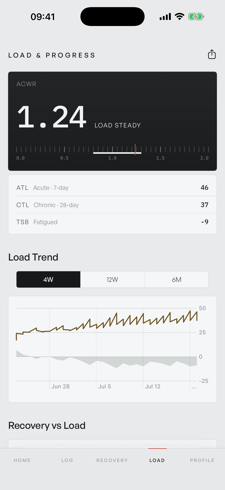
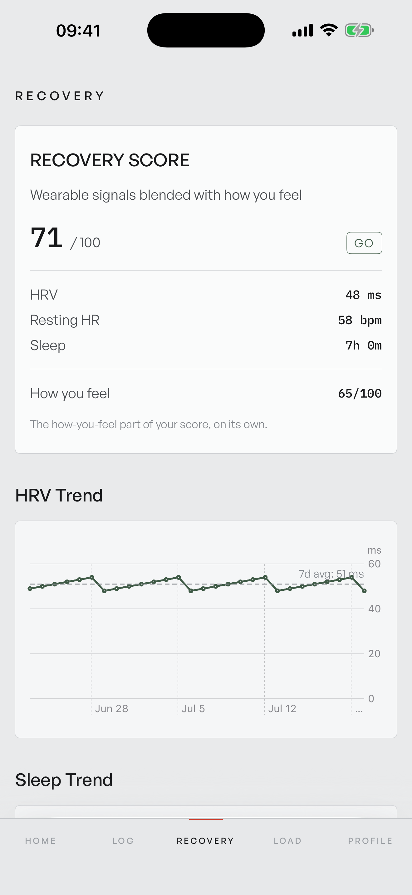
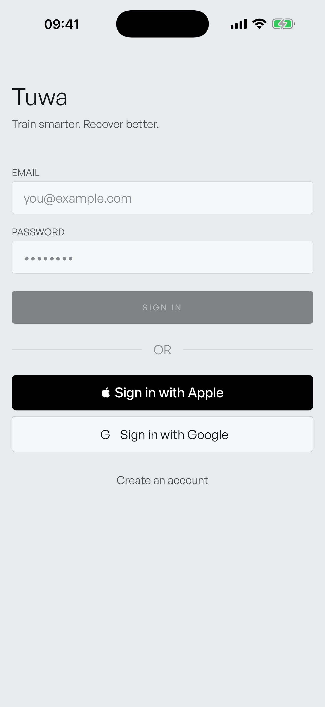
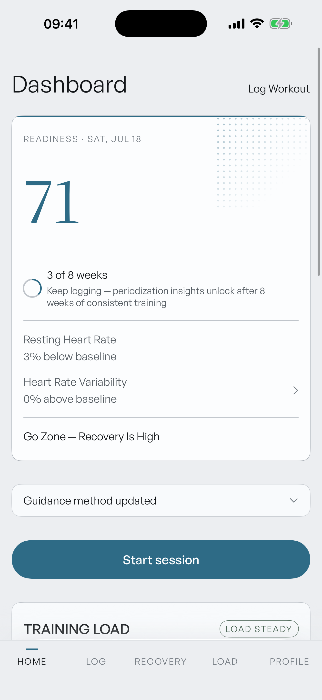

Aluminum Panel treatment — Braun · B&O · 1990s Contax, motion by the Emil Kowalski framework. Full pivot executed 2026-07-20 in four gated stages. Ready for your on-device re-dogfood.
| 7a4eaec | Law + tokens. DESIGN.md v4; aluminum repalette; IBM Plex Mono bundled as the dial voice (PostScript names verified at runtime — not repeating the phase-14 bug); Source Serif and the halftone texture deleted; corners to 5/4pt; fences flipped. The new mono fence caught its own author's assert message on the first run — reworded, chokepoint holds. |
| 5aa4b83 | Shared layer. The black panelStyle plane with a one-per-screen fence; the TickScale component (two-weight ticks, zone band, red needle, ghost mark, mono numerals); strike-zone bar rebuilt on it with its anti-nocebo guard tests intact; butted key rows replacing pill CTAs; the red emphasis rule deleted; tab bar and screen headers onto the caps/needle grammar. |
| f0d4512 | Per-screen apply. Home readiness and Load ACWR onto panels with live scales; verdict card onto dial numerals + equal-weight key row; the full Index Rule sweep — red now renders from exactly two places in the app: scale needles and the active-tab tick. 25+ files cleared of accent washes. |
| df8b876 | Motion. Every animation now rides one strong ease-out curve: 120ms presses, 150–250ms transitions, nothing over 300ms, ease-in eliminated, springs retired from non-gesture paths. The count-up sweeps the hero needle with haptic detents at zone boundaries (verified frame-by-frame on video). Five dead-feeling controls got press states. |
Every stage passed the full 783-test gate (fences, nocebo guards, all 13 UI tests) before its commit. Retained from v1.6: the rehost, tab-bar architecture, movement bank, athlete-only reset, and the whole test suite.






This one has an identity. The panel + needle is a real signature — but three leaks still say "iOS app" and one screen got left behind.
| You | Install current main on your phone. Feel for: the count-up detents, tab-switch speed, whether the aluminum reads premium or flat in daylight, and whether the sheet-chrome leak bothers you in real use. |
| Then | Verdict + your calls on the follow-ups above → version/numbering decision (this is arguably bigger than a 1.6 now) → shell + coach-code deletion commit → push (9+ commits held locally) → ASO re-shoot with the new visuals. |
Generated by the v4 orchestrator session · sim captures (iPhone 17 Pro Max, SCREENSHOT_MODE seed) · motion videos at ~/.tonus-dd/v4-stage3-videos/ · report lives at .planning/orchestration/2026-07-20-v4-report.html